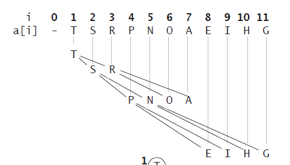
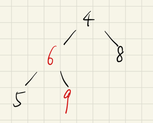
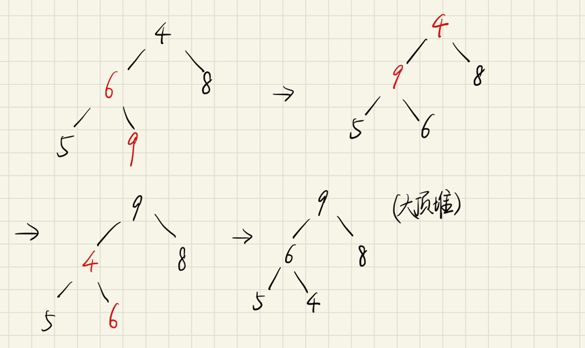
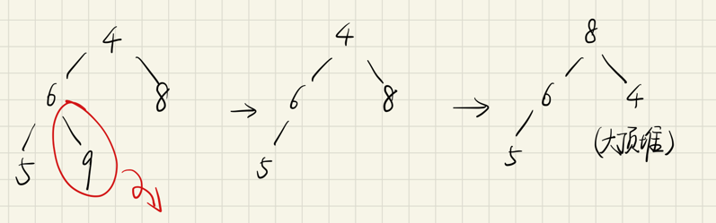

前言
本文包含以下几部分内容
- [x] 二叉堆
- [x] 堆排序
- [x] 二叉堆应用：优先级队列
- [x] Java PriorityQueue
正文
二叉堆
二叉堆是堆排序实现的底层逻辑结构。二叉堆是一种特殊的二叉树（完全二叉树），一般存储在数组中。
对于链表二叉树，一般是操作节点指针，而对于二叉堆，我们使用数组索引作为指针。
// 父节点的索引 |
下面是二叉堆物理存储结构示意图，注意这里索引0空着不用。

二叉堆设计的巧妙之处就在于，对于一个节点，只需要通过简单的运算就可以得到其父、左右孩子节点。
二叉堆分为大顶堆和小顶堆。大顶堆的性质是每个节点都大于等于他的两个子节点，小顶堆的性质相反。
本文以大顶堆为例。此外，为了更加直观，下面会画的图都是二叉树结构。由于大顶堆的性质，堆顶元素arr[1]一定是所有元素中最大的元素。
堆排序
堆排序就是利用堆这种数据结构设计的一种排序算法。
堆排序的基本思想是：将待排序序列构造成一个大顶堆，此时，整个序列的最大值就是堆顶的根节点。将其与末尾元素进行交换，此时末尾就为最大值。然后将剩余n-1个元素重新构造成一个堆，这样会得到n个元素的次小值。如此反复执行，便能得到一个有序序列了
堆排序是一种选择排序，它的最坏，最好，平均时间复杂度均为O(nlogn)，它是不稳定排序。
下面通过一个例子来了解堆排序的过程。
序列：4，6，8，5，9。
步骤一： 构造初始堆。

步骤二：由下向上，由右向左不断调整，使其满足大顶堆的要求。

- 先看【6，5，9】，9为这棵树的最大值节点，因此将9和根节点6互换；
- 再看【4，9，8】，9为这棵树的最大值节点，因此将9和根节点4互换；
- 由于刚才的交换，【4，5，6】不再满足大顶堆的性质，6为这棵树的最大值节点，因此将4和根节点6互换。
- 此时整棵树都满足了大顶堆的性质。
步骤三：将堆顶元素与末尾元素进行交换，使末尾元素最大。弹出末尾最大元素。重复步骤二使其满足大顶堆。如此反复进行交换、重建、交换……直到堆空，元素弹出堆的顺序即为排序后的顺序。

总结堆排序算法步骤：
- 将无需序列构建成一个堆，根据升序降序需求选择大顶堆或小顶堆；
- 由下向上，由右向左不断调整，使初始堆满足大顶堆的要求。
- 将堆顶元素与末尾元素进行交换，使末尾元素最大。弹出末尾最大元素。重复步骤二使其满足大顶堆。如此反复进行交换、重建、交换……直到堆空。元素弹出堆的顺序即为排序后的顺序。
代码实现
//TODO
优先级队列
优先级队列的性质是，出队元素总是优先级最高的元素。优先级队列的底层就是使用二叉堆和堆排序实现了这一性质。当元素插入/删除时，优先级队列的元素会自动排序。
代码框架
优先级队列有两个主要 API，分别是insert插入一个元素和delMax删除最大元素。
下面给出优先级队列的代码框架。
public class MaxPQ <Key extends Comparable<Key>> { //Key是可比较大小的泛型 |
实现swim和sink
元素的swim（上浮）和sink（下沉）都是为了维护堆的性质。
我们要讲的是最大堆，每个节点都比它的两个子节点大，但是在插入元素和删除元素时，难免破坏堆的性质，这就需要通过这两个操作来恢复堆的性质了。
对于最大堆，会破坏堆性质的有有两种情况：
- 如果某个节点 A 比它的子节点（中的一个）小，那么 A 就不配做父节点，应该下去，下面那个更大的节点上来做父节点，这就是对 A 进行下沉。
- 如果某个节点 A 比它的父节点大，那么 A 不应该做子节点，应该把父节点换下来，自己去做父节点，这就是对 A 的上浮。
swim代码实现：
private void swim(int k) { |
sink代码实现：
//下沉第k个元素，以维护最大堆性质 |
实现delMax和insert
delMax和insert就是建立在swim和sink基础上。
insert方法先把要插入的元素添加到堆底的最后，然后让其上浮到正确位置。
public void insert(Key e) { |
delMax方法先把堆顶元素 A 和堆底最后的元素 B 对调，然后删除 A，最后让 B 下沉到正确位置。
public Key delMax() { |
至此，一个优先级队列就实现了，插入和删除元素的时间复杂度为 O(logK)，K为当前二叉堆（优先级队列）中的元素总数。因为我们时间复杂度主要花费在sink或者swim上，而不管上浮还是下沉，最多也就树（堆）的高度，也就是 log 级别。
Java PriorityQueue
Java PriorityQueue的介绍请看我的另一篇博客PriorityQueue 概述
参考资料
- labuladong: 图文详解二叉堆，实现优先级队列
- 《算法（第4版）》
- 图解排序算法(三)之堆排序